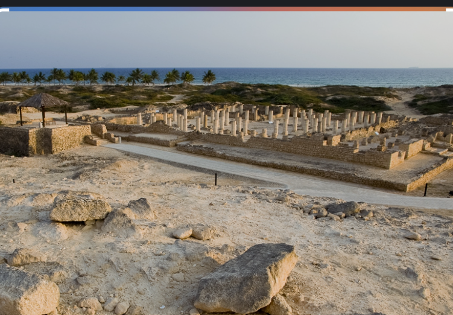
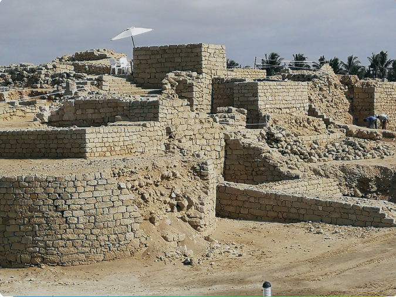
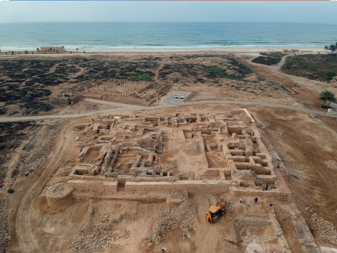
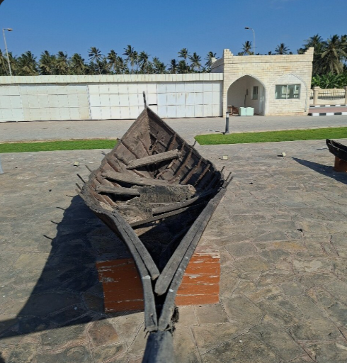
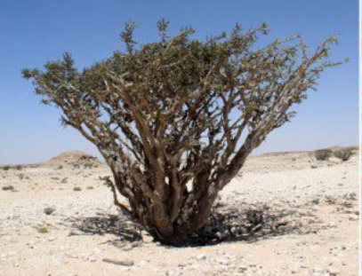
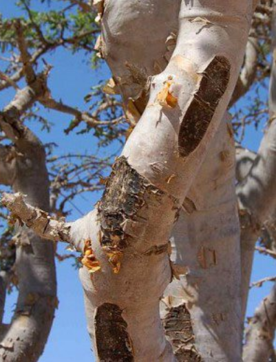
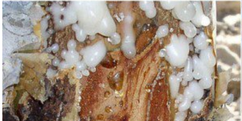
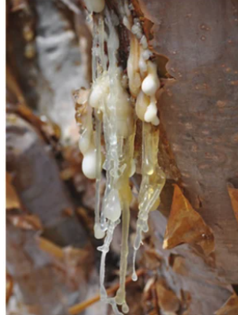
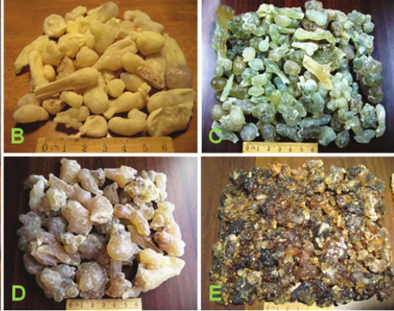

An interactive scientific atlas exploring Boswellia sacra — historical trade routes, archaeological discoveries, chemical biomarkers, paleoclimate proxies, evolutionary genomics, population dynamics, and indigenous Dhofari ethnography.
Archaeological finds in Dhofar and Yemen confirm that Boswellia sacra was first harvested and traded by early pastoral nomads around 6000–5000 BCE. Chemical residue analysis on ancient pottery and censers establishes its continuous presence in spiritual and medical practices across Southern Arabia since the Neolithic period.
The earliest documented international expedition to collect living frankincense trees is recorded on the reliefs of Queen Hatshepsut's temple at Deir el-Bahari (c. 1479–1458 BCE), depicting Omani/Somali trees being transported to Egypt in baskets.
Prof. Ahmed Al-Harrasi is the Chair of the Natural & Medical Sciences Research Center (NMSRC) and Vice Chancellor for Graduate Studies, Research & External Relations at the University of Nizwa, Oman. He is a leading global authority on the chemistry and extraction of Boswellia sacra frankincense, spearheading research into its bioactive compounds, including boswellic acids and incensole acetate.
Key Contributions: His team's work has identified novel triterpenes (e.g., Nizwanone) and elucidated the pharmacological mechanisms of frankincense, bridging traditional medicine and modern clinical research.
No. All four resin grades originate from the exact same species of tree (Boswellia sacra). The trees are genetically identical across Dhofar. The variation in resin grade is driven entirely by ecological terroir: it depends on the specific microclimate, altitude, and rainfall of where that individual tree grows in the Dhofar region, which alters the resin's chemistry, colour, and aroma.
Explore the microclimate, elevation contour, and rainfall barriers across the Dhofar region that directly dictate resin grade formation.
Altitude: 800m – 1,500m
Rainfall: < 50 mm/yr (Behind fog belt)
Microclimate: Dry, arid, desert monsoon rain shadow. High diurnal temperature swings.
Terroir Impact: Stress causes low fluid yield, translucent green hue, high α-pinene concentration.
Altitude: 500m – 900m
Rainfall: 30 – 80 mm/yr
Microclimate: Extreme desert heat, zero monsoon fog reach, dry northerly winds.
Terroir Impact: High heat drives high myrcene monoterpenes; amber-pale yellow colouration.
Altitude: 300m – 600m
Rainfall: 50 – 100 mm/yr
Microclimate: Moderate desert transitional zone, warm limestone gravel plains.
Terroir Impact: Higher limonene levels yield bright citrus notes and warm golden tears.
Altitude: 50m – 400m
Rainfall: 150 – 300 mm/yr (Monsoon moisture)
Microclimate: Dense summer fog (Khareef), high ambient humidity, mild temperature.
Terroir Impact: High moisture yields high fluid volume, darker amber colour, deeper woody base notes.
Pale translucent · Samhan mountains · reference grade
Pale yellow · plateau behind Dhofar · high myrcene
Golden yellow · north-west Dhofar · high limonene
Darker amber · everyday / local · deeper woody
| Attribute | Hojari | Najdi | Shathari | Shaabi |
|---|---|---|---|---|
| Resinous / incense | 9 | 8 | 7 | 8 |
| Citrus (lemon/orange) | 6 | 8 | 8 | 4 |
| Minty-turpentine | 7 | 5 | 4 | 3 |
| Woody | 4 | 5 | 6 | 7 |
| Sweet / balsamic | 5 | 6 | 6 | 5 |
| Spicy / herb-like | 3 | 4 | 4 | 4 |
Attributes adapted from GC-olfactometry and expert-panel odour profiles. (Al-Harrasi et al., 2019)
Al-Baleed (ancient Zafar) stands as one of the premier maritime trading hubs of the medieval Islamic world on the Indian Ocean. Prospering between the 8th and 16th centuries CE, the city grew rich from controlling the harvest and seaward export of Dhofar's royal frankincense. Systematic excavations have brought to light four principal architectural structures that defined the civic, military, economic, and maritime heart of the port.

A monumental 8th–10th century sanctuary spanning over 1,732 m². It featured a grand central courtyard and a vast prayer hall supported by 144 octagonal stone columns.

Spanning 3,623 m², this multi-story royal citadel housed the governor and elite garrison, with massive curtain towers protecting secure resin storehouses.

A fortified outer wall reinforced with watchtowers and a deep defensive moat channel connected to the lagoon provided security against inland raids.

Natural sheltered lagoon where traditional Omani dhows (including Sambuk and Ghanja models) loaded frankincense for high-seas trade to China and India.
Founded in the 3rd century BCE by the Hadramaut Kingdom, Sumhuram was built as a fortified coastal outpost to control the collection and maritime export of Dhofari frankincense.
Located right within the Al-Baleed Archaeological Park, the museum features two main exhibition halls highlighting maritime and land trade history:
The traditional harvesters of Dhofar belong primarily to the Shahri (Jibbali) and Mahri tribal lineages. They speak unwritten Modern South Arabian languages—distinct Semitic languages that predate Arabic in the region and contain rich indigenous botanical vocabularies specifically for Boswellia sacra habitats and resin grades.
In Dhofari homes, frankincense resin is burned daily in ornate clay incense burners (Majmar) for purification, welcoming guests, and scenting clothes. Ethnographic records document its medicinal role in chewing for oral hygiene, boiling in hot water for bronchial clarity, and applying oil to soothe joints.
Mass spectrometry identifies diagnostic chemical fingerprints: incensole and incensole acetate serve as biomarker signatures specific to Boswellia sacra and B. papyrifera, distinguishing authentic frankincense from adulterants. Non-volatile pentacyclic triterpenes like AKBA (3-O-acetyl-11-keto-β-boswellic acid) persist for millennia.
Stable carbon (δ¹³C) and oxygen (δ¹⁸O) isotope ratios trapped within fossilized resin tears and sub-fossilized tree rings record severe historic droughts. Elevated δ¹³C values reflect stomatal closure and heightened intrinsic water-use efficiency (WUE) during severe droughts and Indian Ocean Monsoon (IOM) failures. Concurrently, enriched δ¹⁸O signatures indicate low relative humidity, enhanced soil-leaf evapotranspiration, and northward/southward migrations of the Intertropical Convergence Zone (ITCZ) across the Holocene paleoclimate archive (6000 BCE – present).
When resin is burned during rituals, thermal degradation creates oxidized compounds such as incensole oxide. Finding these heat-altered biomarkers in ancient censers provides conclusive proof of active incense combustion rather than raw storage.
Gas chromatography of organic residues scraped from mummies and jar liners confirms that Boswellia resin was a crucial component of ancient Egyptian mummification balms, prized for its antibacterial properties and ability to retard tissue decay.
Residue analysis from limestone altars across the Levant (such as Tel Arad) reveals sacred incense mixtures blending frankincense with animal fats and wine. In Roman contexts, small glass and ceramic unguentaria retain traces of boswellic acids, confirming its use in luxury cosmetics and medicinal salves.
Recent de novo genome sequencing of Boswellia sacra revealed a 667.8 Mb assembly encoding 18,564 high-confidence protein-encoding genes. Evolutionary analysis shows gene duplications derived from ancient hexaploidy shared across eudicots, alongside a major expansion of Gypsy retroelements over the past 2 million years that shaped its stress-response pathways.
Phylogenetic trees show distinct divergence between Boswellia sacra (Arabia/Somaliland), B. frereana (Somaliland), B. serrata (India), and B. papyrifera (Ethiopia). While B. sacra produces high pentacyclic triterpenes (boswellic acids), B. frereana evolved resin pathways yielding lupeol and epilupeol tailored to rocky cliff ecosystems.
Recent research has indicated population declines and unsustainable exploitation of multiple Boswellia species, including the Somalian B. sacra populations. However, information on the Arabian populations was previously minimal and contradictory.
The 2025 rapid assessment, covering at least 3,465 km² of the Dhofar mountains, was conducted to predict if the same pattern of population collapse seen in other species is occurring in Oman.
The study observed regeneration across almost all populations, with 97% of transects including at least 10% small trees or saplings. The data do not currently indicate significant or widespread declines in B. sacra in Oman, as seen in other species. Population structures were variable, with both reverse-J shaped (healthy regeneration) and bell-shaped (declining) distributions observed locally.
Despite the overall healthy picture, threats varied geographically and included:
The authors conclude that while the situation is not catastrophic, improved socio-ecological management systems are needed to maintain this status. Key priorities include: research to elucidate drivers of population patterns, improved rangeland management, enhanced monitoring and management of resin tapping, and identification of potential additional reserves.
A major landmark ecological evaluation published in Journal of Arid Environments (ScienceDirect, 2025 - S0140196325000527) demonstrates severe demographic degradation across wild Boswellia populations. Key findings show that without active regeneration interventions, population recruitment has plummeted due to:
To reverse this trend, emergency conservation frameworks advocate for mandatory rotational tapping rest periods (at least 2–3 years), camel-proof enclosure fencing around wild nurseries, and micro-propagation efforts in Salalah.
Shifts in the Indian Ocean Monsoon and ITCZ have reduced coastal summer fog (Khareef) moisture required for fluid regeneration.
Infestations by longhorn beetles target resin-exhausted bark, destroying sap flow channels and killing adult trees.
Constructing fenced protection zones allows natural seedling germination away from hungry livestock herds.
Hebrew Levonah. Exodus 30:34–38: God commands Prophet Musa (Moses) to formulate the sacred Ketoret incense containing pure frankincense, stacte, onycha and galbanum — reserved for the Tabernacle. Also placed on grain offerings (Leviticus 2:1–2). [1]
Matthew 2:11: the Magi bring gold, frankincense and myrrh to the infant Prophet ‘Isa (Jesus). Gold for kingship, frankincense for divine priesthood, myrrh for mortality. [1]
Not named in the Quran, but woven through tradition — the Queen of Sheba’s gifts to Prophet Sulaiman, the sanctuary use of Prophet Musa, the Magi’s gifts to Prophet ‘Isa, and Companions’ use of bakhoor. [2]
Frankincense — Old French franc encens, meaning “noble incense” or “pure incense.”
Luban (Arabic) / Levonah (Hebrew) — from the ancient Semitic root L-B-N, meaning “milky white,” referring to the fresh milky sap oozing from bark cuts.
(Pliny, Natural History 12.30–32; Groom, 1981)
The identity of the earliest traders is not fully known, but distinctive flint types link the trade to Dhofar. Later, the Hadrami state of Shabwa (Khor Rori/Sumhuram), indigenous Dhofari communities, Omani Arabs moving north-east from Yemen, and Parthian Persians all participated.
Frankincense and myrrh moved north; spices, textiles and silk arrived by ship from India and China. The lost city of Ubar, roughly 75 km north of Salalah, was likely a key caravan hub.
Frankincense was reserved for divine worship in earliest times and was equated in value with gold. The Egyptian Book of the Dead called it the “sweat of the gods.”
By 3200 BCE, with the introduction of writing, trade volume from Dhofar toward southern Mesopotamia increased sharply.
Caravans reached Shabwa, Marib, Petra and Gaza, with Alexandria as a maritime outlet.
Somalia, Ethiopia, and Oman dominate global supply. Somaliland exports lower grades of B. sacra (“beyo”) to Djibouti, Ethiopia and the Middle East, while higher grades (“meydi”, B. frereana) move to Saudi Arabia, the UAE and Yemen. Production remains labour-intensive and is threatened by overharvesting; several Boswellia species have been upgraded to Endangered on the IUCN Red List.
Each card below connects traditional uses to contemporary human and veterinary scientific findings. Evidence levels range from strong (systematic reviews, veterinary clinical trials) to preliminary in-vitro studies.
Bedouin and Dhofari pastoralists applied crushed frankincense resin salve directly to camel and livestock wounds to prevent maggot infestation and speed healing. Water infused with resin was administered to camels with coughing and respiratory distress.
Canine Joint Care: Open veterinary clinical trials on dogs suffering from chronic osteoarthritis demonstrated that Boswellia serrata extract significantly reduced pain, lameness, and stiffness after 6 weeks of dietary supplementation.
Equine & Livestock Application: Standardized boswellic acid extracts are increasingly incorporated into veterinary anti-inflammatory supplements for horses and cattle to treat joint inflammation without NSAID-induced gastric ulcers.
Frankincense resin burned or inhaled for bronchial asthma, cough, and bronchial congestion. Used in Unani and Ayurvedic practice as a lung tonic.
Boswellic acids inhibit 5-lipoxygenase (5-LOX), a key enzyme in leukotriene-mediated airway inflammation. Clinical trials of B. serrata extract in asthma show reduced symptom frequency and improved lung function scores; a systematic review confirms anti-inflammatory benefit across respiratory conditions.
Resin chewed or rinsed as a mouthwash for gingivitis, dental infections, and oral inflammation. Chewing gum of mastic-like resins has been used across the Arabian Peninsula for centuries.
Randomized controlled trials of B. serrata mouthwash show significant reduction in gingival index and plaque scores versus placebo, comparable to chlorhexidine in some studies. Essential oil shows antibacterial activity against S. mutans and P. gingivalis.
Used for degenerative and inflammatory arthritis, rheumatic pain, and inflammatory bowel conditions. Mentioned in classical Unani and Ayurvedic texts for joint stiffness.
Boswellia serrata extract (5-Loxin®, Aflapin®) is clinically validated in multiple RCTs for osteoarthritis — significant reduction in WOMAC pain scores after 90 days. AKBA is the primary active agent.
Incense smoke used in some traditional contexts as a protective and purifying agent; associated with spiritual healing.
AKBA induces apoptosis in glioblastoma, colon, and bladder cancer cell lines via caspase activation and NF-κB pathway inhibition. Clinical trials show positive anti-edematous effects in brain tumor radiation therapy.
Resin applied to wounds, cuts, and skin infections; burned to purify air in sickrooms; used as an antiseptic gargle.
Essential oil shows pronounced antibacterial activity against Staphylococcus aureus and E. coli. Resin extracts accelerate wound healing in animal models via fibroblast stimulation.
Boswellia sacra Flueck. is a small, resin-bearing tree native to the Dhofar region of Oman. Below is an interactive 3D matrix illustrating its arboreal growth, papery bark, resin exudation process, and commercial grade classification.

A mature Boswellia sacra tree standing at Wadi Dowkah Natural Park in Dhofar, Oman. The species exhibits a thick trunk and a dense, sprawling canopy adapted to hyper-arid desert conditions.

Close-up view of the smooth, papery, peeling bark of Boswellia sacra. Traditional incisions reveal the underlying cambium where resin ducts release protective oleo-gum-resin upon wounding.


Close-up depiction of milky resin weeping from fresh tree incisions, followed by the hardening phase where droplets form translucent, aromatic frankincense "tears" along the bark.

(b) Hougari Royal (Najdi): Desert northern harvest. (c) Hougari Superior: Clear green tinge for therapeutic water infusion. (d) Hougari Regular: Common incense resin. (e) Hougari Sha'bi: Coastal monsoon harvest.
The Boswellia sacra genome assembly spans 667.8 Mb with 18,564 protein-coding genes. A major discovery is the expansion of Gypsy retroelements over the past 2 million years — mobile DNA elements that reshaped stress-response pathways, enabling survival in hyper-arid Dhofar. Gene families for terpene synthases (TPS) and cytochrome P450 enzymes are heavily duplicated, driving the complex resin chemistry.
Expanded TPS gene clusters produce the monoterpenes (α-pinene, myrcene, limonene) responsible for each grade's unique aroma.
DREB and NAC transcription factors show positive selection, enabling stomatal control under extreme water deficit.
Mobile elements reshaped regulatory networks — a genomic "memory" of 2 million years of arid adaptation.
Wild B. sacra roots are dominated by Ascomycota (60.3%) fungi and Actinobacteria bacteria, while cultivated trees shift toward Basidiomycota (52%) and Proteobacteria. Wild-associated microbes produce higher glucosidase and cellulase enzyme activity and indole-3-acetic acid (IAA) — a plant growth hormone that likely helps the tree survive extreme aridity.
Wild-associated bacteria secrete indole-3-acetic acid, promoting root elongation under drought stress.
Higher glucosidase & cellulase activity in wild rhizospheres accelerates nutrient cycling in poor desert soils.
Microbiome transplants may boost survival rates of nursery-raised seedlings reintroduced to wild habitats.
High-resolution WorldView-3 satellite imagery combined with convolutional neural networks (CNNs) can identify individual B. sacra tree crowns with 93.7% overall accuracy and a Cohen's Kappa of 0.87. This enables automated population counts, health classification (healthy/stressed/dead), and land-cover change detection across the entire Dhofar range — a task impossible with manual surveys.
Model precision/recall validated against ground-truth field surveys across 12 transects.
31 cm panchromatic resolution reveals individual canopy geometry, enabling species-level classification.
Repeat passes every 2 weeks track seasonal dieback, tapping stress, and regeneration hotspots.
Every resin cut drains total non-structural carbohydrates (TNC) — the tree's stored energy reserves. Studies show carbon gain is limited more by atmospheric drought (high VPD) than by soil water deficit. Trees with smaller leaf areas face carbon starvation sooner, especially during the dry season when tapping coincides with peak evaporative demand. Over-tapping leads to reduced seed viability and, eventually, canopy dieback.
High vapor pressure deficit (VPD) forces stomatal closure, limiting photosynthesis regardless of soil moisture.
Repeated tapping during the dry season depletes TNC reserves faster than they can be replenished.
Research suggests 2–3 year rest periods are needed for full TNC recovery between tapping cycles.
Each Boswellia species has a unique terpenic "fingerprint." Isoincensole acetate is the shared biomarker for B. sacra and B. carteri, while incensole dominates in B. papyrifera. Machine learning models trained on GC-MS spectra can identify species and geographic origin with high confidence — even in mixed archaeological samples or commercial blends.
Shared biomarker for B. sacra & B. carteri — identifies Dhofari origin.
Dominant in B. papyrifera — distinguishes Ethiopian resin from Arabian.
Deep learning on GC-MS spectra achieves >95% species-level accuracy in mixed samples.
Editing DREB and NAC transcription factor genes could enhance stomatal control and water-use efficiency in nursery seedlings before reintroduction to wild habitats.
Synthetic biology could engineer yeast to produce boswellic acids and incensole acetate, reducing pressure on wild trees while supplying pharmaceutical demand.
Marker-assisted selection for heat-tolerant genotypes could future-proof reforestation efforts as monsoon patterns shift under climate change.